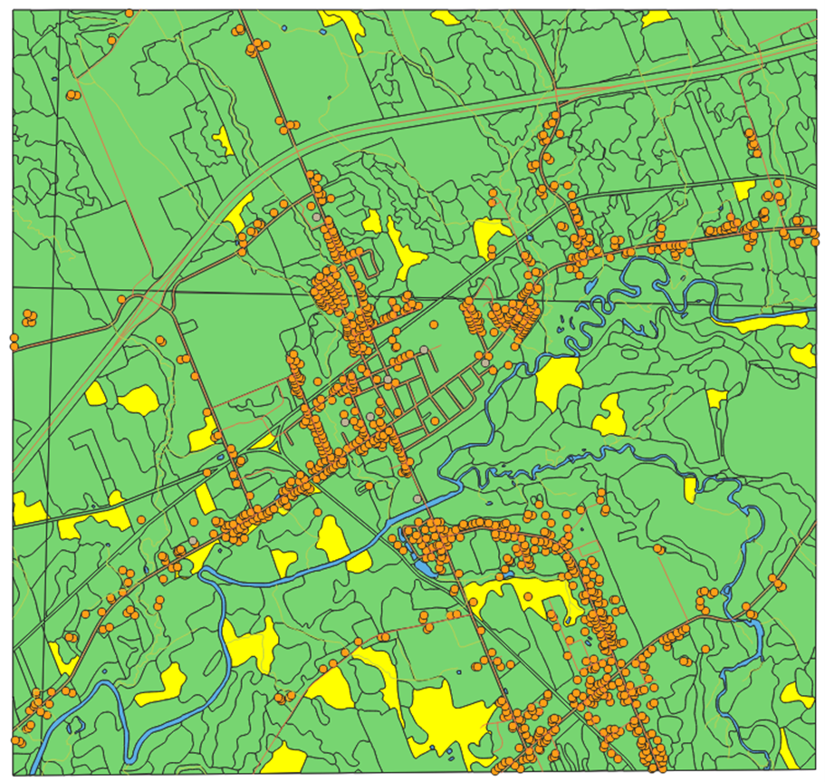

Querying Forest Stand Data using PyQGIS
NSCC Centre of Geographic Sciences, Intro to Programming
October 2023

Project Description:
I wrote a Python script that can query and produce a summary of Nova Scotia Department of Natural Resources forestry data in QGIS. The user inputs the leading species, and the program will query all polygons, each one corresponding to a forest stand, with that leading species. The program outputs a count of the number of forest stands, the smallest and largest area stands, the average leading species percentage within the stands, the average area of forest stands, and the total area of stands.
The documentation describing the program flow can be downloaded here:
The source code and QGIS project required to run the program can be downloaded here:
Software Used:
- Microsoft Visual Studio Code
- QGIS
- Esri ArcGIS Pro
Data Sources:
- NSDNR: Forestry Stand Data